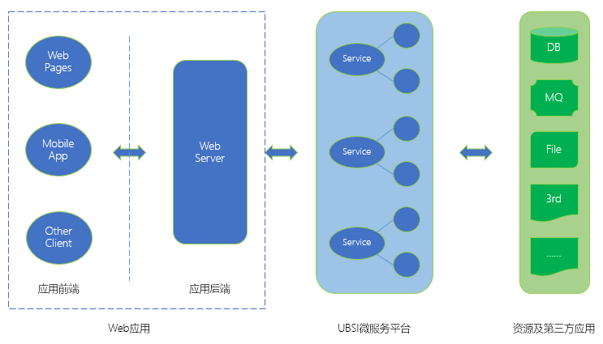

Web应用
UBSI能够帮助应用开发者快速实现微服务架构的落地，一个典型的微服务化的Web应用，应该具有如下的架构：

在这种多层的分布式架构下，应该遵循的设计原则：
- 将核心的业务逻辑封装为"微服务"，微服务应该是自治、细粒度、松耦合、无状态的。如果是复杂的业务系统，还可以继续对微服务进行分层，比如基础服务、业务服务、聚合服务等
- 微服务封装业务数据以及资源访问，"前台"的Web应用必须通过微服务接口才能访问/操作这些资源
- 微服务管理的业务数据及其操作逻辑是可以"开放"给其他应用使用的，应用之间的互操作或数据共享应该通过微服务层来处理，不同业务领域的微服务进行聚合，可以形成统一的业务"中台"
- 微服务层之前的面向用户的展现及交互部分可以作为"前台"Web应用，又分为两层：
- 应用前端：向用户展示数据、提供交互功能的UI界面，比如Web页面、移动端APP等
- 应用后端：负责向应用前端提供数据以及操作接口
通常情况下，Web应用的后端是一个提供restful-api的Web服务：
- 响应前端的"查询"请求：调用"中台"的微服务接口获得数据，对数据进行聚合或转换，以json的形式提供给前端
- 响应前端的"操作"请求：调用"中台"的微服务接口进行相应的业务处理。（Web服务本身不应该实现具体的业务逻辑，也不应直接访问业务数据等资源）
- 负责处理用户身份认证及操作鉴权，如果需要的话，还应该处理"统一用户认证"或SSO单点登录等机制
- 负责采集/记录用户行为数据（日志），以供统计分析或操作审计